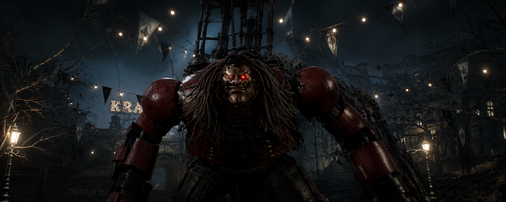

Parade Master
The First Puppet Nightmare
The Parade Master is the first major boss encountered in Krat. Once created to entertain the city's citizens, this gigantic puppet became a terrifying monster after the puppet frenzy. Brutal and unpredictable, the Parade Master introduces players to the dark and violent world of Lies of P.
Combat Information
- Type: Puppet
- Weakness: Electric Blitz
- Location: Krat Central Station
- Drop: Parade Leader's Ergo